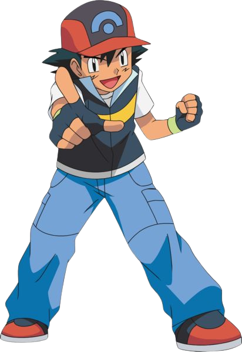
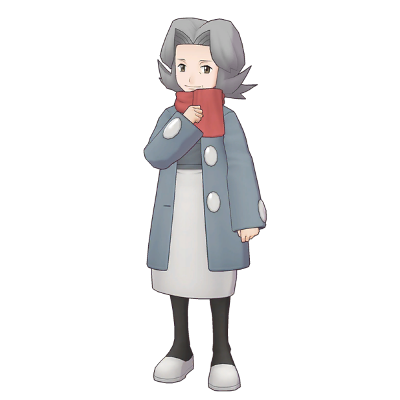

BAC Dresseur
Cette formation a pour but de former des dresseurs. Le dresseur doit être capable de combattre face à des pokemon en etant capable d'élaborer des stratégie selon les conditions,(le type du pokemon, la finalité du combat, le type de combat...)
Comme pour les autres BAC, celui ci est sur 3ans, et prévois un stage de 1mois en 2eme année et un stage de 2mois en 3eme année
La formation permet une insertion dans le monde du travail mais egalement une poursuite d'étude.
Prix :
820€ par an
Pré-requis :
Concours Illuptia
Titulaire du brevet
 BAC Chercheur
Cette formation a pour but de former des chercheurs. Le chercheur doit avoir de grandes notions scientifiques afin de pouvoir solutionner la réponse à un problème donné ou de les utiliser afin de faire des avancés qu'elles soient scientifiques ou technologiques elles doivent permettre le progrès dans le domaine pokémon.
Comme pour les autres BAC, celui ci est sur 3ans, et prévois un stage de 1mois en 2eme année et un stage de 2mois en 3eme année
La formation permet une insertion dans le monde du travail mais egalement une poursuite d'étude.
Prix :
630€ par an
Pré-requis :
Concours Illuptia
Titulaire du brevet, mention bien
BAC Medecine
Cette formation a pour but de former des medecins spécialisés dans le domaine des pokemon. Le médecin doit être capable de diagnostiquer la santé d'un pokemon, afin de soigner ses blessures ou de le guérir de sa maladie, il doit egalement être capable de dresser un plan nutritionnel adapté pour les différents pokemon.
Comme pour les autres BAC, celui ci est sur 3ans, et prévois un stage de 1mois en 2eme année et un stage de 2mois en 3eme année
La formation permet une insertion dans le monde du travail mais egalement une poursuite d'étude.